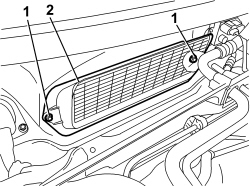

5010B18 CLIMATE CONTROL UNIT AIR INTAKE - R+R
- Path
- Procedures > 50 AUXILIARY UNITS > 5010 CLIMATE CONTROL - MISCELLANEOUS > 5010B CLIMATE CONTROL AIR PIPES AND DUCTS > 5010B18 CLIMATE CONTROL UNIT AIR INTAKE - R+R
- Kind
- repair procedure (removal / refitting; the operation number is the code)
- Applies to
- all engines; all production periods
- Interactive page
- https://sloeber94.github.io/elrnDB-aBrrSpdr/en/#/946002245
Applies to: all engines; all production periods
 Removing
Removing
 Refitting
RefittingOp. 7025A64 ENGINE COMPARTMENT GASKET - R.R.
1. Release the retaining buttons using the special tool.
Tool | Description | Function | Validity |
|---|---|---|---|
1823015000 | Knife | Retainer removal |
2. Remove the right half trim (2a) releasing the internal retainers (2b).

Applies to: all engines; all production periods
1. Undo the nuts.
2. Remove the air intake.

Applies to: all engines; all production periods
Refitting
Removing- Check that the air intake is not damaged.
- Position the air intake.
- Tighten the nuts.
- Place the right trim in position and attach the inner retainers.
- Attach the retaining buttons.